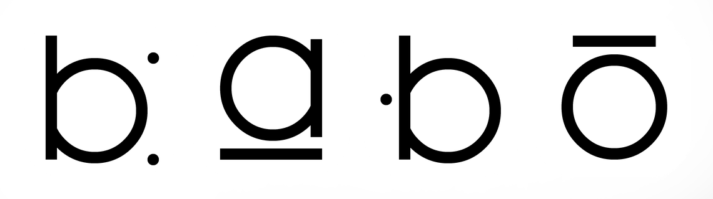

TRAVAUX
Projets collectifs et recherches individuelles des membres.

Projets collectifs et recherches individuelles des membres.
Mise en perspective des œuvres et des écritures numériques.
Réflexion sur la place de l'algorithme comme matériau artistique et sur les frontières entre production humaine et génération automatisée.
Un texte sur les tensions entre les objets physiques produits par le collectif et leurs doubles numériques.
Échange entre plusieurs membres du collectif autour de leurs méthodologies de recherche et de création.
Glissez vers la droite pour découvrir les artistes du collectif.
Installations physiques, immersions virtuelles et résidences.
Immersion collective autour des interfaces génératives — lieu à confirmer.
Installation multi-écrans présentée lors des Journées du Numérique.
Première présentation publique des travaux du collectif.
Soutenir la recherche indépendante et les infrastructures libres.
Contribuer librement au financement des projets et du matériel du collectif.
FAIRE UN DONRejoindre le cercle des soutiens réguliers et suivre les avancées du collectif.
DEVENIR MEMBREInitier une collaboration ou soumettre un projet.
Décrivez votre projet et vos disponibilités, nous reviendrons vers vous rapidement.
ENVOYER UN EMAIL